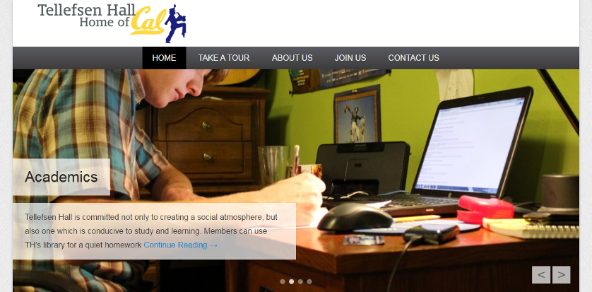
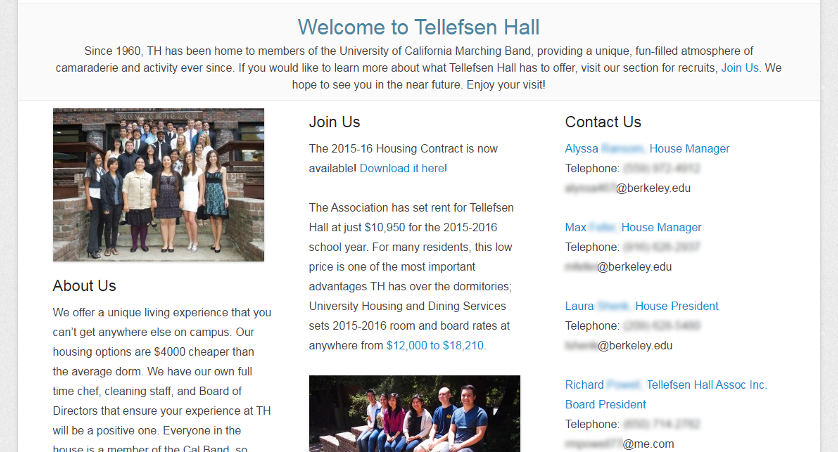
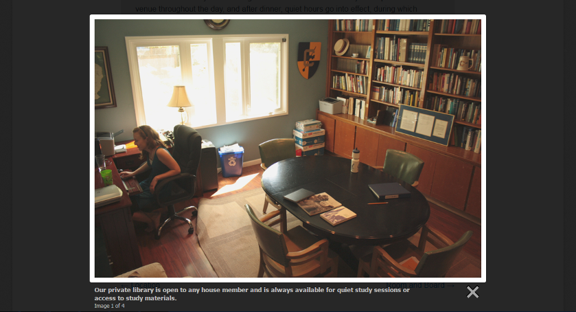

Tellefsen Hall, Home of the Cal Band
Abstract
Tellefsen Hall (commonly referred to as TH) is the historic home for the University of California Marching Band (Cal Band). It has housed and served members of the band for decades, and is a listed building because of its significance.
Project Context
I played the alto saxophone in Cal Band for four years, and in the latter half I took on the position of webmaster for the TH website. Cal Band is 90% student-run, and the contributions of its members are what make things possible; students do everything from fundraising, to arranging music, to writing the software used to chart field shows.
Tools
HTML |
CSS |
Wordpress |
User Research
TH is also student-run - just two students manage the house and its operations. Thus the TH site is an important resource in introducing new members to the house and informing them of its details. For example, incoming freshmen may live in TH in lieu of university dorms, so they need a strong showing to feel comfortable foregoing a more "traditional" housing experience.
Interface Development
 -
The TH site is made with Wordpress and uses its landing page (above) to convey the most vital information for interested tenants. Site files (like the housing contract) are easily accessible for both users and admins to read and update, respectively. The landing page uses its space to convey two of the most important aspects of the house:
- Narrative: Like many other aspects of the university, a large appeal of TH is its place in a long-running history embedded with traditions, stories, and other elements of mythos. Participation in such a place invites potential tenants to both experience and contribute to this intangible benefit, i.e. ethos.
- Pricing: Far more utilitarian and less imaginative than narrative, the cost-effectiveness of the house is another primary point of interest for those in search of housing, and clear juxtaposition of pricing helps promote a logical rationale for opting into the property, i.e. logos.
-
Other pages within the site use LightboxJS-styled image presentation to showcase different rooms and amenities for the property.